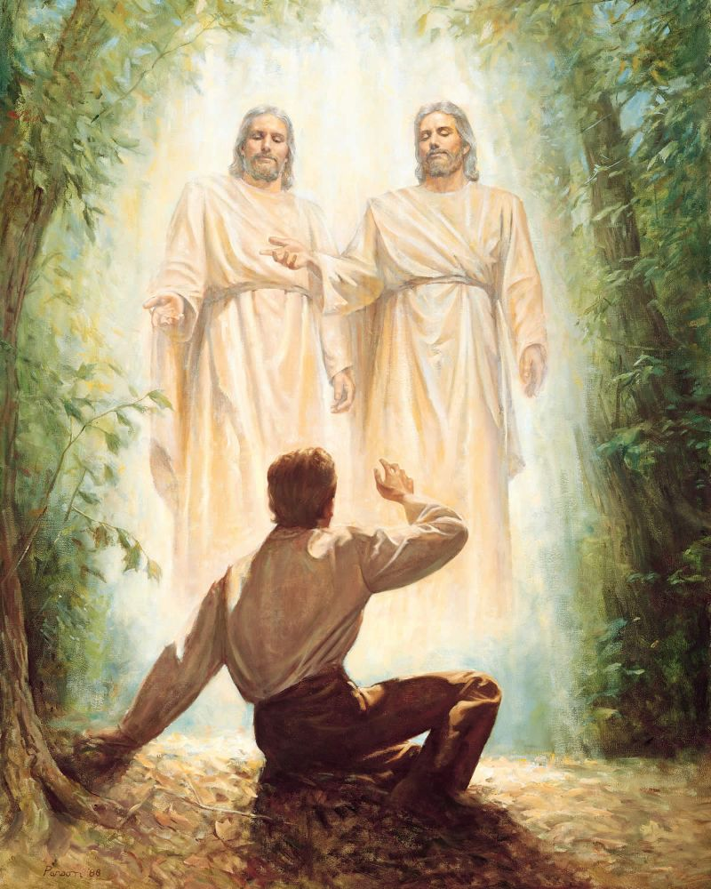
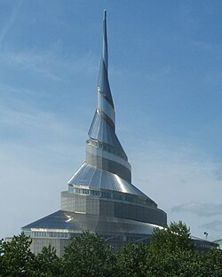

Our History

The Prophet Joseph Smith
At just 14 years old the young Joseph Smith had a question: What church was the true church of God? He had learned from his own studing of the bible that he could ask God Himself to recieve an answer, and so he did. He entered a quiet grove near his house in Palmyra New York and recived a marvolus vision.
“I saw a pillar of light exactly over my head, above the brightness of the sun, which descended gradually until it fell upon me.
“… When the light rested upon me I saw two Personages, whose brightness and glory defy all description, standing above me in the air. One of them spake unto me, calling me by name and said, pointing to the other—This is My Beloved Son. Hear Him!”
He was told that none of the churches were the correct church and that Joseph would recieve further information. Later, that following night, he recived another vision. This time it was the angel Moroni informing him of Golden Plates buried in the hill cumorah, and to inform his father of his visions. This message was so important that the angel appeared three more times and gave the exact same message each time. After 4 years of more visits from the angel and trials to ensure Joseph would be able to keep the plates safe, Joseph was allowed to obtain the plates and translate the record into the Book of Mormon, as well as establish the Lords church on the Earth once more.
Independence in the mid 1800's
Joseph continued to follow the Lord and built His church as best he could. He continued to be guided by the Lord on what he should do, and one of the revelations he recived was about Independence Missouri. In it the Lord established that Independence would be the gathering place for the saints and would be the New Jerusalem. Joseph was instructed to inform the saints that Independence is Zion but to also instruct them that they couldn't go at the same time. He selected certain individuals and families to be the first people to settle in Zion and to help prepare the land for the rest of the saints. However, not everyone listened to the Prophet and too many people moved to Independence, and started making claims that the Lord would force out the locals. This angered the locals who, over the next few years, forced the saints out of Jackson County and slew many of them. They also threw false alligations against Joseph and harrased the saints because of this. Ultimately, this progressed till the mob killed Joseph and his brother.

Independence Today
Eventually, after many years, we started coming back to Independence and repairing our relationship with the locals in the area. At this time the RLDS, a group of people who separated themselves from us after Joseph Smith was killed and believed that Brigham Young was not supposed to be the next prophet, had settled in the area. Now they have changed their name to the Community of Christ and we are on great terms with them. Together we are creating the Zion Story, an archive of stories from the people of Zion about their personal lives and experiences. If you come to visit, look for their spiral temple located accross the street from our visitor center, and right next to the Independence temple lot.